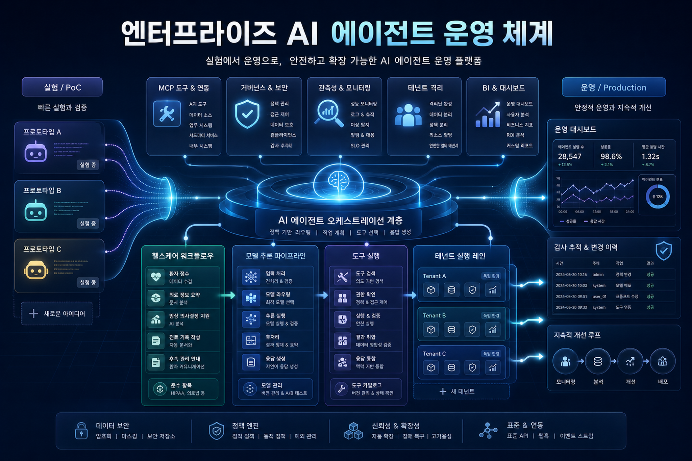
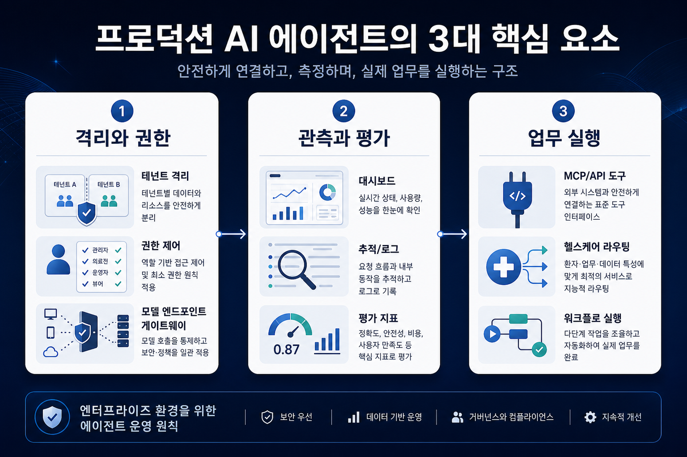
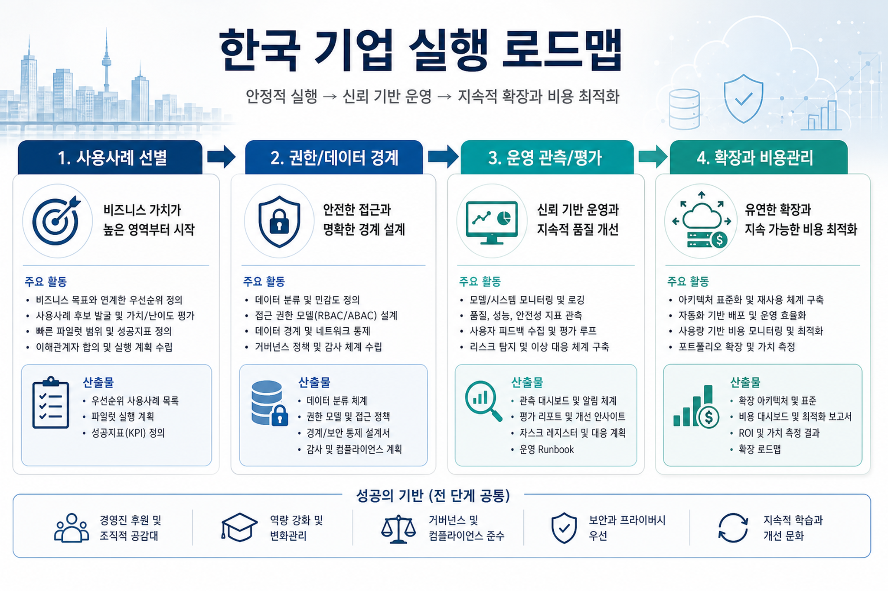

Intelligent radiology workflow optimization with AI agents
방사선 판독 worklist를 rigid rule 대신 agentic AI로 최적화해 전문분야, 업무량, 피로도, case complexity, 긴급도를 함께 고려하는 healthcare workflow 사례입니다.
원문 보기오늘 AWS Machine Learning Blog의 신규 흐름은 명확합니다. Bedrock AgentCore, MCP, Quick/BI, SageMaker OpenAI-compatible endpoint가 함께 가리키는 방향은 “모델 선택”이 아니라 권한·격리·관측·실행 자동화를 갖춘 Enterprise AI 운영 모델입니다.


Multi-tenant agent, MCP 연결, Code Interpreter memory, dashboard automation, healthcare routing이 모두 AgentCore Runtime/Memory/Observability/Gateway 축으로 묶인다. 이는 enterprise agent platform의 reference architecture가 구체화되고 있음을 뜻한다.
SageMaker AI의 OpenAI-compatible API는 기업이 기존 OpenAI SDK·LangChain·Strands 코드를 유지하면서 자체 계정의 모델 endpoint로 이동할 수 있게 한다. LLM gateway와 private inference 전략에 중요하다.
오늘 글들은 “답변 생성”보다 CRM 품질 검증, dashboard 변경, radiology worklist 배정, recruitment screening 보조처럼 업무 상태를 바꾸는 agent를 다룬다. 따라서 통제와 책임 경계가 더 중요해진다.
기술적으로는 세 가지 변화가 동시에 진행된다. 첫째, MCP/API server가 agent와 enterprise system 사이의 표준 tool boundary가 되고 있다. 둘째, long-context 경쟁은 Code Interpreter 기반 working memory와 recursive analysis 패턴으로 보완된다. 셋째, model endpoint는 OpenAI-compatible protocol을 통해 application code와 infrastructure ownership을 분리한다.
| # | 게시물 | 주요 기술 | 전략적 의미 |
|---|---|---|---|
| 1 | Intelligent radiology workflow optimization with AI agents | Amazon Bedrock AgentCore, Amazon Bedrock, Strands Agents | 방사선 판독 worklist를 rigid rule 대신 agentic AI로 최적화해 전문분야, 업무량, 피로도, case complexity, 긴급도를 함께 고려하는 healthcare workflow 사례입니다.... |
| 2 | Integrating AWS API MCP Server with Amazon Quick using Amazon Bedrock AgentCore Runtime | Amazon Bedrock AgentCore, Amazon Bedrock, Amazon Quick, AWS API MCP Server | Amazon Quick과 AWS API MCP Server를 Bedrock AgentCore Runtime으로 연결해 자연어 질의를 AWS CLI/API 실행으로 전환하는 운영 assistant 구현 방식입니다.... |
| 3 | Building multi-tenant agents with Amazon Bedrock AgentCore | Amazon Bedrock AgentCore, Amazon Bedrock | SaaS형 agentic application을 production으로 올릴 때 필요한 tenant isolation, identity, memory namespace, RAG 격리, tool/API 접근통제, 비용 추적, observability 설계를 AgentCo... |
| 4 | Break the context window barrier with Amazon Bedrock AgentCore | Amazon Bedrock AgentCore, Amazon Bedrock, Strands Agents | 긴 문서를 한 번에 context window에 넣는 대신 AgentCore Code Interpreter를 persistent working memory로 사용하고 sub-LLM 호출을 반복하는 Recursive Language Model(RLM) 패턴을 설명합니다.... |
| 5 | Build AI agents for business intelligence with Amazon Bedrock AgentCore | Amazon Bedrock AgentCore, Amazon Bedrock, Strands Agents, Amazon Bedrock Knowledge Bases | BI와 대시보드 운영에 AI agent를 적용해 pipeline quality reporting, sales coaching, lead insight, dashboard discovery/modification을 자동화하는 사례/구현 글입니다.... |
| 6 | Build an AI-powered recruitment assistant using Amazon Bedrock | Amazon Bedrock | Amazon Bedrock, Nova, Guardrails, Lambda/API Gateway/S3/DynamoDB로 이력서 분석, 후보자 적합도 평가, 인터뷰 질문 생성을 지원하는 채용 assistant reference architecture입니다.... |
| 7 | Build AI-powered dashboard automation agents with NLP on Amazon Bedrock AgentCore | Amazon Bedrock AgentCore, Amazon Bedrock, Amazon Quick, Strands Agents | BI와 대시보드 운영에 AI agent를 적용해 pipeline quality reporting, sales coaching, lead insight, dashboard discovery/modification을 자동화하는 사례/구현 글입니다.... |
| 8 | Announcing OpenAI-compatible API support for Amazon SageMaker AI endpoints | SageMaker AI, Strands Agents | SageMaker AI endpoint가 `/openai/v1` OpenAI-compatible API와 time-limited bearer token을 지원해 OpenAI SDK, LangChain, Strands Agents를 endpoint URL 변경만으로 연동... |
반복 빈도, 업무 영향, 데이터 접근 권한, human review 가능성을 기준으로 우선순위를 정한다. 오늘 사례 기준으로 BI 데이터 품질, 운영 질의, 문서 분석, healthcare/HR 보조는 명확한 후보군이다.
Tenant context, act-on-behalf token, MCP tool 권한, RAG namespace 격리, endpoint별 bearer token scope를 설계 산출물로 남긴다.
Agent invocation, tool call, prompt/response, guardrail intervention, 비용, 정확도, 사용자 feedback을 관측해야 운영 전환이 가능하다.
Dashboard 변경처럼 실제 자산을 수정하는 agent는 validation-first, 새 버전 생성, rollback, 승인 workflow를 내장해야 한다.

영업/운영/데이터/IT Ops의 반복적 판단·조회·검증 업무를 선별하고 KPI를 리드타임, 품질, 비용, 리스크 감소로 잡는다.
개발팀 단독 PoC가 아니라 보안·개인정보·감사·법무 기준을 시작 단계에 포함한다. HR/의료 영역은 특히 human decision boundary를 명시한다.
Agent runtime, MCP registry, identity, memory, observability, evaluation, model gateway를 공통 blueprint로 정의한다.
Tenant별 비용, session별 latency, tool별 failure, model별 품질을 dashboard로 만들고 운영회의 지표로 편입한다.
Least privilegeTenant isolationGuardrailsHuman-in-the-loopCost attributionRollback
방사선 판독 worklist를 rigid rule 대신 agentic AI로 최적화해 전문분야, 업무량, 피로도, case complexity, 긴급도를 함께 고려하는 healthcare workflow 사례입니다.
원문 보기Amazon Quick과 AWS API MCP Server를 Bedrock AgentCore Runtime으로 연결해 자연어 질의를 AWS CLI/API 실행으로 전환하는 운영 assistant 구현 방식입니다.
원문 보기SaaS형 agentic application을 production으로 올릴 때 필요한 tenant isolation, identity, memory namespace, RAG 격리, tool/API 접근통제, 비용 추적, observability 설계를 AgentCore 중심으로 정리한 글입니다.
원문 보기긴 문서를 한 번에 context window에 넣는 대신 AgentCore Code Interpreter를 persistent working memory로 사용하고 sub-LLM 호출을 반복하는 Recursive Language Model(RLM) 패턴을 설명합니다.
원문 보기BI와 대시보드 운영에 AI agent를 적용해 pipeline quality reporting, sales coaching, lead insight, dashboard discovery/modification을 자동화하는 사례/구현 글입니다.
원문 보기Amazon Bedrock, Nova, Guardrails, Lambda/API Gateway/S3/DynamoDB로 이력서 분석, 후보자 적합도 평가, 인터뷰 질문 생성을 지원하는 채용 assistant reference architecture입니다.
원문 보기BI와 대시보드 운영에 AI agent를 적용해 pipeline quality reporting, sales coaching, lead insight, dashboard discovery/modification을 자동화하는 사례/구현 글입니다.
원문 보기SageMaker AI endpoint가 `/openai/v1` OpenAI-compatible API와 time-limited bearer token을 지원해 OpenAI SDK, LangChain, Strands Agents를 endpoint URL 변경만으로 연동할 수 있게 된 발표입니다.
원문 보기